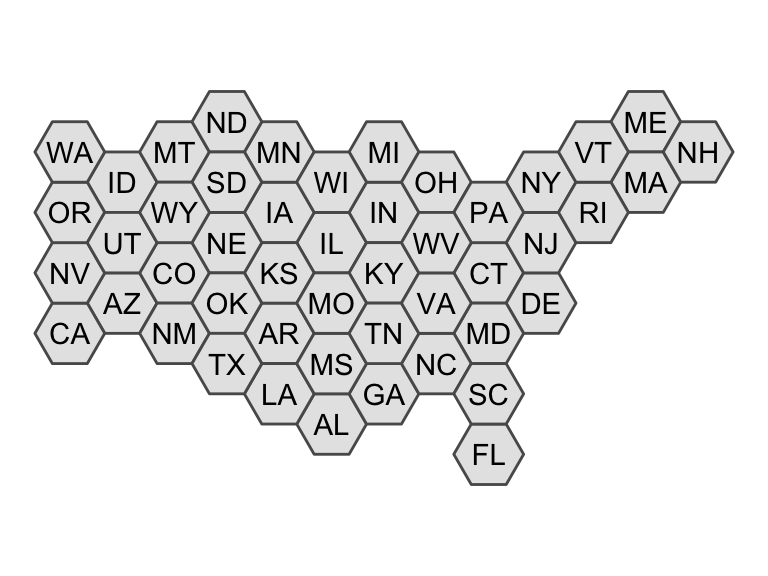
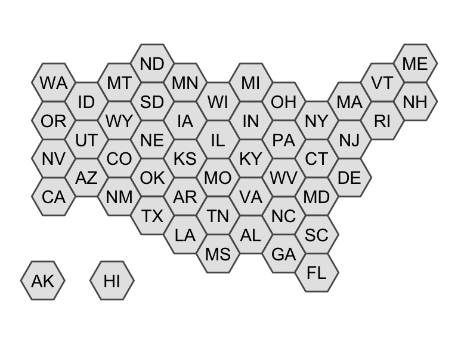
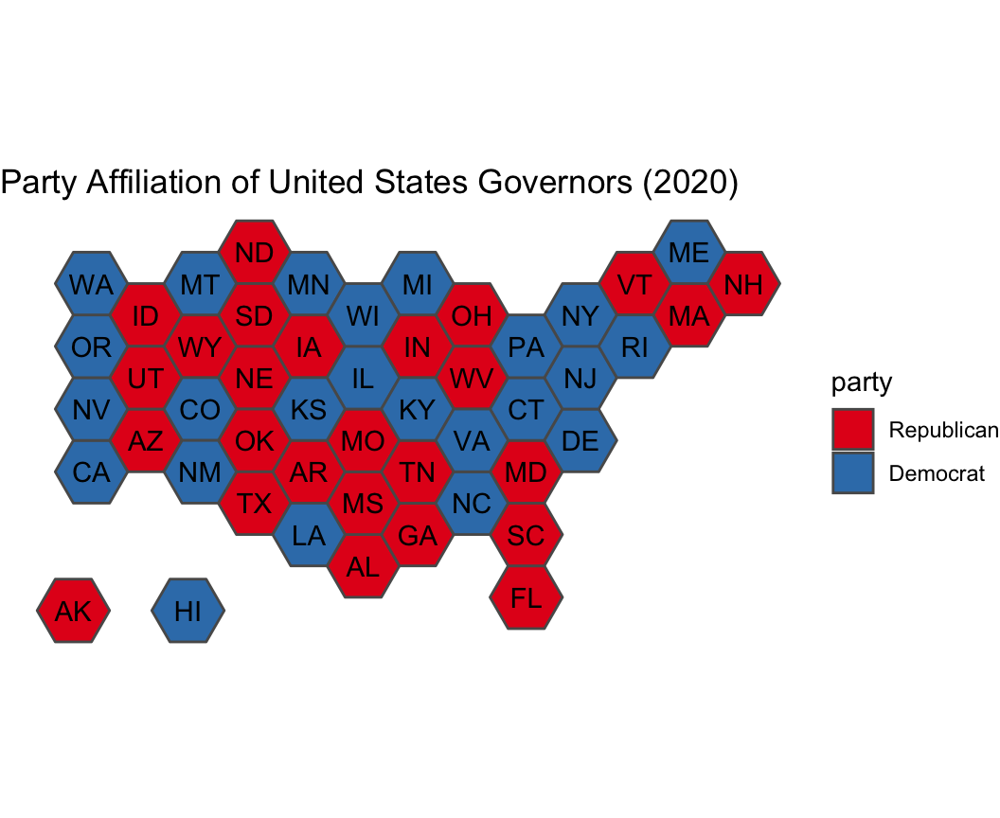
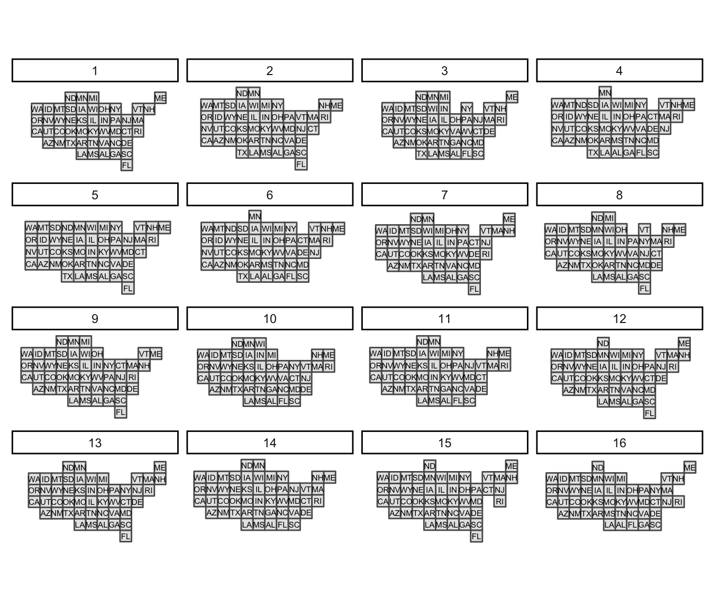
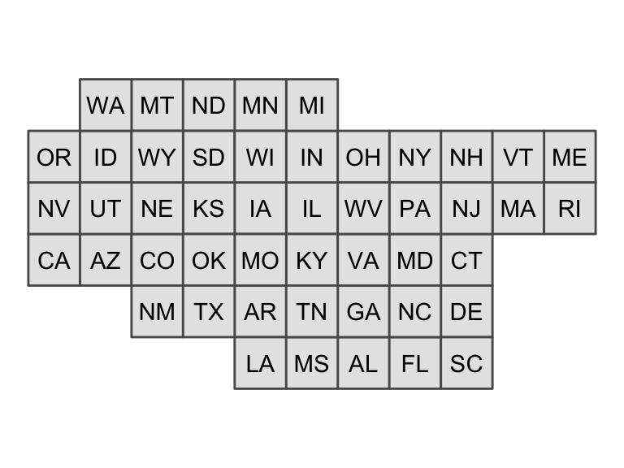
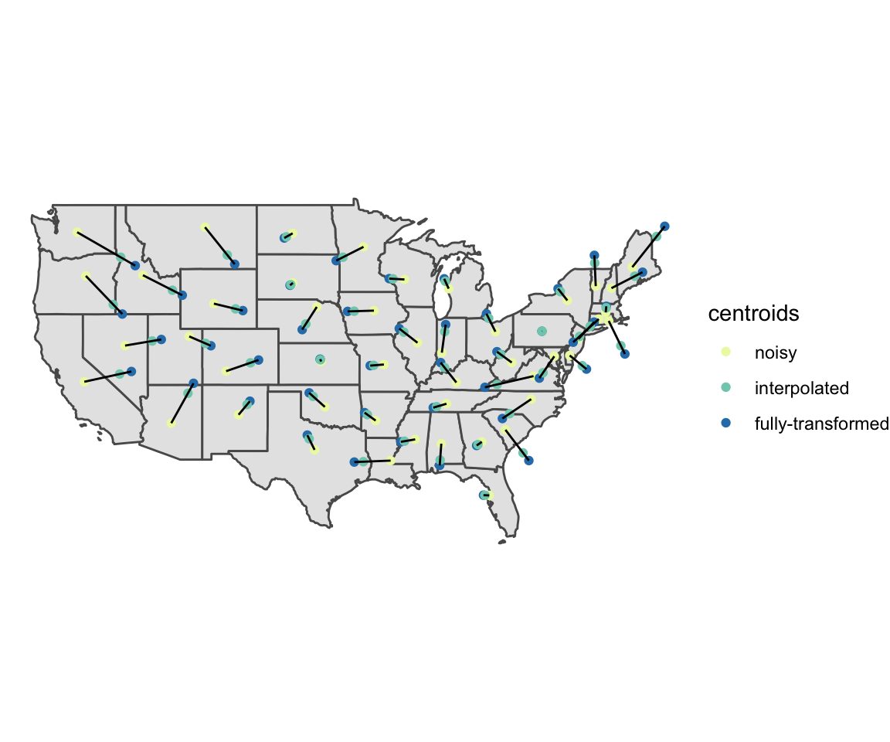
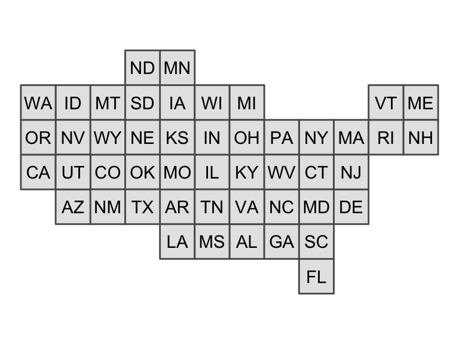

What is a Tile Map?
A tile map is a map in which each region is represented by a single tile of the same shape and size. For example, a square tile map of the United States would consist of square tiles of the same size for each state, regardless of the geographic area of each state. When creating a tile map, the goal is to arrange tiles in a manner that preserves local relationships between regions, as well as the overall shape of the original map. Using a tile map is advantageous when trying to visualize data where the importance of a region does not depend on the geographic area of the region. Tile maps prevent regions with large areas from dominating a map and prevent regions with small areas from going unnoticed. The tilemaps package implements an algorithm for creating tile maps that was proposed by Graham McNeill and Scott Hale in the paper “Generating Tile Maps” (2017). The package allows the user to generate a single tile map or many tile maps, which can be compared by using cost functions or by plotting the maps.
Creating a Single Tile Map
To create a single tile map, the generate_map() function can be used. In the following example, a tile map with flat-topped hexagons is generated for the contiguous United States using the governors dataset, which is part of the tilemaps package.
governors <- governors %>% mutate(tile_map = generate_map(geometry, square = FALSE, flat_topped = TRUE)) ggplot(governors) + geom_sf(aes(geometry = tile_map)) + geom_sf_text(aes(geometry = tile_map, label = abbreviation), fun.geometry = function(x) st_centroid(x)) + theme_void()

The generate_map() function requires an object of class sfc_POLYGON or sfc_MULTIPOLYGON as input. If the coordinates of the sfc object are in terms of longitude and latitude, the coordinates will need to be transformed to a planar projection before creating the tile map. The square argument controls whether the tiles are squares or hexagons, and the flat_topped argument controls whether or not hexagons are flat-topped.
The generate_map() function only works for contiguous regions. However, after a tile map has been generated, the create_island() function can be used to add islands to the layout of the tile map. The create_island() function takes two arguments. The first is an sfc_POLYGON object representing the layout of a tile map, and the second is the position of the new island tile. The position argument can be specified as either a numeric vector of length 2 giving the coordinates for the centroid of the new tile, or a string equal to “upper left”, “lower left”, “upper right”, or “lower right” indicating in which corner of the original tile map the new tile should be located. In the following example, tiles for Alaska and Hawaii are added to the previously generated tile map.
all_states <- governors %>% add_row(abbreviation = "AK", party = "Republican", tile_map = create_island(governors$tile_map, "lower left")) %>% add_row(abbreviation = "HI", party = "Democrat", tile_map = create_island(governors$tile_map, c(-12050000, 3008338))) ggplot(all_states) + geom_sf(aes(geometry = tile_map)) + geom_sf_text(aes(geometry = tile_map, label = abbreviation), fun.geometry = function(x) st_centroid(x)) + theme_void()

Once a tile map has been created, coloring tiles according to another variable is simple. In the following code, the states are colored according to the party affiliation of the governor. This is an example of a situation where it is useful to use a tile map, instead of a regular map, because each state has only one governor, regardless of the area or population of the state.
ggplot(all_states) + geom_sf(aes(geometry = tile_map, fill = party)) + geom_sf_text(aes(geometry = tile_map, label = abbreviation), fun.geometry = function(x) st_centroid(x)) + scale_fill_brewer(palette = "Set1") + ggtitle("Party Affiliation of United States Governors (2020)") + theme_void()

The layout of a tile map can easily be written to a shapefile for later use or to share with others as follows.
st_write(governors$tile_map, "us_tilemap.shp")
Creating Many Tile Maps
To create and compare more than one tile map, the many_maps() function can be used. In the following example, 16 candidate tile maps are generated and plotted.
us_maps <- many_maps(governors$geometry, governors$abbreviation, prop = c(0, 0.1), interpolate = c(0.5, 1), smoothness = c(0, 20), shift = list(c(0,0), c(0,0.5)))

The different candidate tile maps are generated by adding sources of variation at different steps in the algorithm. The prop, interpolate, smoothness, and shift arguments control these sources of variation and will be discussed in more detail later. The total number of maps generated by the many_maps() function is the product of the lengths of each of these arguments. The output of the many_maps() function is a data frame in which each row corresponds to one map and the columns contain the generated maps, the parameters used for creating the maps, and the costs associated with each map. The data frame is ordered by the total cost. The different types of costs will be discussed in more detail later as well. After comparing the tile maps that were generated, the tile map that the user wishes to use can be added to the original data frame and plotted.
governors <- governors %>% mutate(square_map = us_maps$map[[1]]) ggplot(governors) + geom_sf(aes(geometry = square_map)) + geom_sf_text(aes(geometry = square_map, label = abbreviation)) + theme_void()

The plot of all the candidates maps shown above can be generated using the plot_many_maps() function. The function requires a list of maps, which are of class sfc_POLYGON, and the labels for the regions of the map. Below is code for how the plot_many_maps() function can be used to create the same plot as before.
plot_many_maps(us_maps$map, governors$abbreviation)
The Algorithm
The four main steps of the algorithm used to generate a tile map are transforming the region centroids, transforming the boundary, fitting tiles to the boundary, and assigning regions to tiles. The prop, interpolate, smoothness, and shift arguments of the generate_map() and many_maps() functions are used to introduce variation at different steps in the algorithm, which can lead to different candidate maps. How each step of the algorithm works and how variation is introduced will now be discussed in greater detail.
Transforming the Centroids
The first step of the algorithm is to transform the region centroids so that centroids of neighboring regions are approximately equidistant but the relative orientation of neighbors is still preserved. The prop argument can be used at this step of the algorithm to add variation. Before transforming the original region centroids, Gaussian noise is added to the position of each centroid. The standard deviation for the Gaussian noise is defined as a proportion of the mean distance of a region centroid to its neighbor centroids, and the prop argument is used to control this proportion. After noise has been added to the centroids, the centroids are iteratively updated until they converge. The formula used to update the noisy centroids is given by McNeill and Hale in “Generating Tile Maps” (2017).
Before moving to the next step of the algorithm, another source of variation can be added. Throughout the remaining steps of the algorithm the fully-transformed centroids can be used, or interpolated centroids can be used. The interpolated centroids are defined through linear interpolation between the noisy centroids and fully-transformed centroids. If straight lines were drawn between the noisy centroids and fully-transformed centroids, then the interpolated centroids would be the points at a specified proportion of the distances along the lines. The interpolate argument controls the proportion. If the interpolate argument is set equal to 0, then the noisy centroids would be used in the remaining steps of the algorithm, and if the interpolate argument is set equal to 1, then the fully-transformed centroids would be used. If the interpolate argument is set equal to 0.75, then the points that are at 75% of the distance between the noisy centroids and fully-transformed centroids would be used.
Using the same United States dataset as before, the plot below shows the noisy, interpolated, and fully-transformed centroids when the prop argument was set equal to 0.1, and the interpolate argument was set equal to 0.75. Notice that in the plot the centroids of states in the northeast are being pushed out, while centroids of states on the west coast are being pulled toward the center of the map. This results in the centroids of neighboring states being approximately equidistant. Throughout the remaining steps of the algorithm, the interpolated centroids will be used.

Transforming the Boundary
The next step of the algorithm is to transform the boundary of the map based on the new centroids. The boundary is pulled in toward the new centroids if the boundary is more than the estimated tile size away from the centroids, and the boundary is pushed away from the new centroids if the boundary is less than the estimated tile size away from the centroids. At this step, the boundary of the map is first converted to a set of points, and then a sample of approximately 1,000 points is taken from that set. The sampled boundary points are transformed according to the formula given in “Generating Tile Maps” (McNeill and Hale 2017). After the sample boundary points have been transformed, they are then converted to a polygon. To introduce variation at this step in the algorithm, the transformed boundary can be smoothed. The smooth() function from the smoothr package is used to perform kernel smoothing of the boundary. How much the boundary is smoothed is controlled by the smoothness argument. The smooth() function calculates the bandwidth of the Gaussian kernel used for smoothing as the mean distance between adjacent points, and the bandwidth is then multiplied by the value given for the smoothness argument. The greater the value of the smoothness argument, the more smooth the boundary will become. Below is a plot with the transformed and smoothed boundaries of the United States with the smoothness argument set equal to 20. Notice that the transformed boundary is now outside the original boundary around the northeast and the transformed boundary is within the original boundary along the west coast. For the remaining steps of the algorithm, the smoothed boundary will be used.

Fitting Tiles to the Boundary
The third step of the algorithm is to fit tiles inside the transformed boundary. This is done by first creating a grid of tiles that covers the bounding box of the transformed polygon. The size of the tiles is estimated by first finding the total area of the map, dividing it by the number of regions, and then taking the square root. After creating the initial grid, the number of tile centroids that are inside the transformed boundary is found. Depending on whether the number of tile centroids inside the boundary is greater than or less than the number of regions in the map, the tile size is either increased or decreased, and then a new grid of tiles is created. This process is repeated until the correct number of tile centroids are within the transformed boundary. Variation can also be added at this step by shifting the grid of tiles before counting the number of tile centroids that lie within the transformed boundary. The shift argument is a numeric vector of length two for the generate_map() function or a list of numeric vectors of length two for the many_maps() function. The first value of the vector determines the amount to shift in the x direction and the second value determines the amount to shift in the y direction. The values given in the vector are multiplied by the tile size, and the resulting value is the amount that the grid is shifted. For example if c(0.5,0.5) was given for the shift argument in the generate_map() function, then the grid of tiles would be shifted by half a tile in both the x and y directions. In the final step of the algorithm, a square grid, which was shifted by half a tile in each direction, will be used.
Assigning Regions to Tiles
To complete the tile map, the regions of the original map must be assigned to the tiles of the tile map. The assignment of regions to tiles is chosen to minimize the sum of the squared distances between transformed region centroids and the assigned tile centroids. This an example of the well-known linear sum assignment problem. This problem can be solved using an algorithm known as the Hungarian method, which was first developed by Harold Kuhn (1955). A plot of the resulting tile map is shown below.

Calculating Costs
In “Generating Tile Maps” (2017), McNeill and Hale describe four different cost functions that can be used to compare tile maps. The first is a location cost, which is the mean distance between the transformed centroids and tile centroids divided by the tile size. The next cost is an adjacency cost, which is the mean of the proportion of neighbors that each region is missing. The relative orientation cost is a measure of how much the angles between centroids of neighboring regions change. First the mean change in angles between a region centroid and its neighboring centroids is found for each region. Then the final relative orientation cost is the mean of the means of the regions. The final cost is a roughness cost. This cost is based on how many edges in the tile map are shared edges. These four costs can be combined into one total cost as a weighted sum. The data frame output by the many_maps() function includes columns for each of the costs, and the weights argument can be used to control the weight for each cost when calculating the total cost.